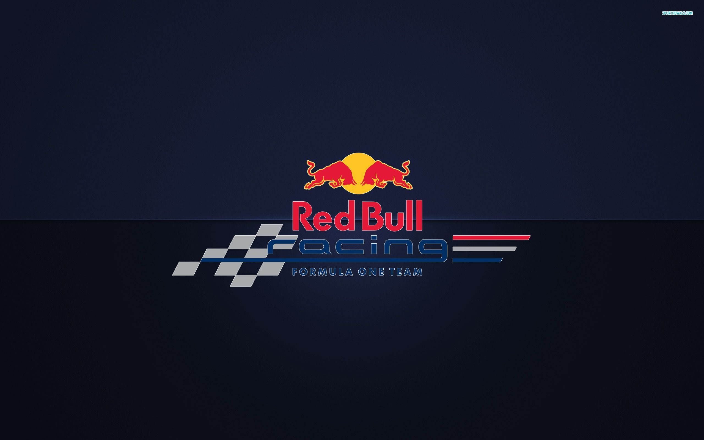
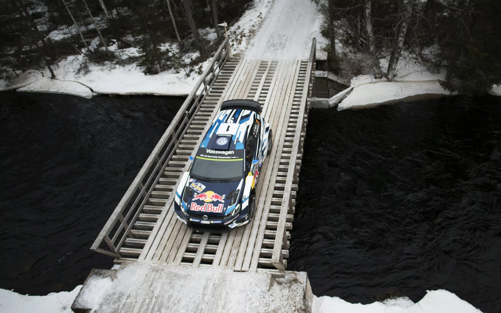
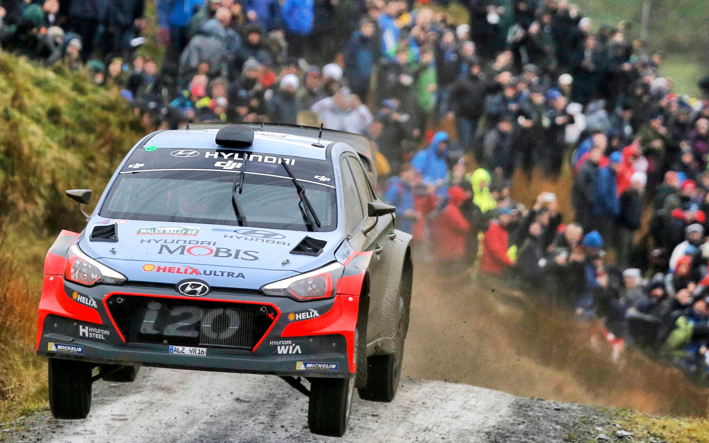
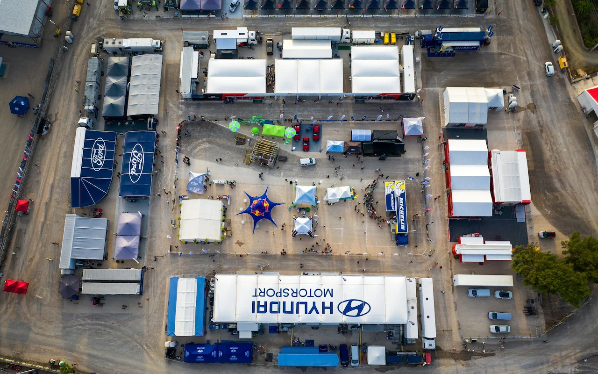
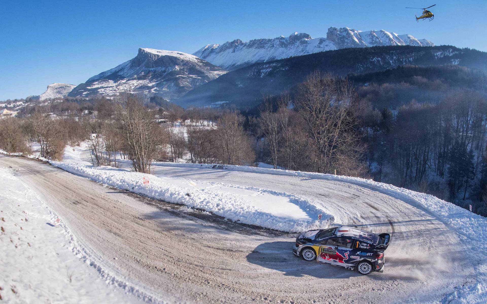
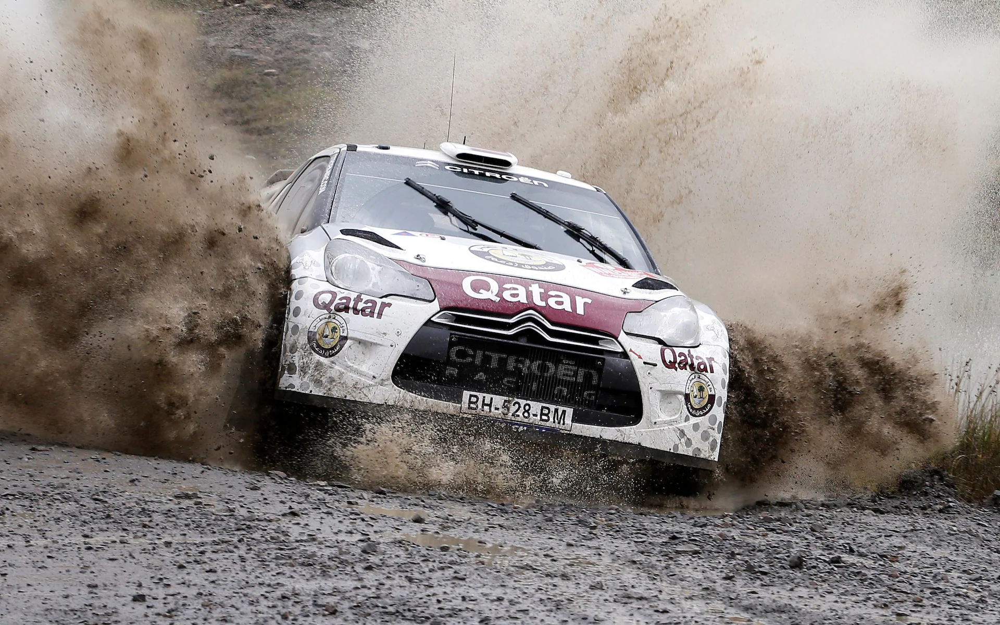

Love cars? Climb in the driver's seat for the latest in reviews, advice and picks. Behind the dynamic state-of-the-art world rally cars competing for outright victory, there are three support championships for less modified cars; the FIA WRC 2 Championship for four-wheel drive cars, the FIA WRC 3 Championship for two-wheel drive cars, and the FIA Junior WRC Championship where the up and coming stars of the sport can showcase their talent in identical Ford Fiesta R2s in an ‘arrive and drive’ five-round series. The FIA World Rallycross Championship (World RX) is head-to-head short, sharp racing on mixed surfaces (dirt and asphalt) contained within amphitheatre venues. High-profile drivers are equipped with RX Supercars with over 600bhp and the ability to accelerate from 0-60mph in less than two seconds – faster than an F1 car. World RX debuted in 2014 with a 12-round calendar and included events in Argentina, Canada and throughout Europe. Formula One venues in Germany (Hockenheim) and Spain (Circuit de Catalunya-Barcelona) are both used to host World RX rounds and in 2016, an all-new city race in Riga, Latvia, was added. In 2017, World RX will visit Africa for the first time as the World Championship visits the Killarney circuit in Cape Town, South Africa. Race meetings are normally run over two days and include four separate qualifying sessions, two knock-out semi-finals and one final.
Love cars? Climb in the driver's seat for the latest in reviews, advice and picks. Behind the dynamic state-of-the-art world rally cars competing for outright victory, there are three support championships for less modified cars; the FIA WRC 2 Championship for four-wheel drive cars, the FIA WRC 3 Championship for two-wheel drive cars, and the FIA Junior WRC Championship where the up and coming stars of the sport can showcase their talent in identical Ford Fiesta R2s in an ‘arrive and drive’ five-round series. The FIA World Rallycross Championship (World RX) is head-to-head short, sharp racing on mixed surfaces (dirt and asphalt) contained within amphitheatre venues. High-profile drivers are equipped with RX Supercars with over 600bhp and the ability to accelerate from 0-60mph in less than two seconds – faster than an F1 car. World RX debuted in 2014 with a 12-round calendar and included events in Argentina, Canada and throughout Europe. Formula One venues in Germany (Hockenheim) and Spain (Circuit de Catalunya-Barcelona) are both used to host World RX rounds and in 2016, an all-new city race in Riga, Latvia, was added. In 2017, World RX will visit Africa for the first time as the World Championship visits the Killarney circuit in Cape Town, South Africa. Race meetings are normally run over two days and include four separate qualifying sessions, two knock-out semi-finals and one final.

Skills
- Linux Systems
- Operating Systems
- Database Systems
- Python
- Computer Networks
- Computer Architectures
- Java
- C programming
- Algorithims & Data Structures
- Control systems
- Measurements & Data Acquisition











